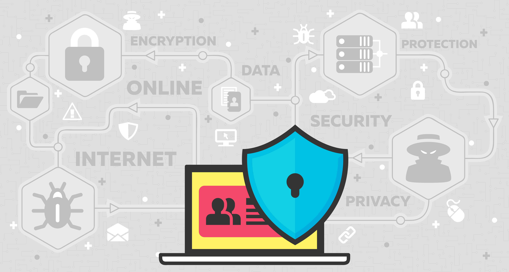

Características de la seguridad informática
La seguridad informática debe cumplir con ciertas características para que sea eficiente. A continuación puedes ver las condiciones esenciales.

Confidencialidad
Las acciones de seguridad informativas están orientadas a proteger la confidencialidad, es decir, la información de acceso no autorizado y garantizar que solo las personas adecuadas tengan acceso a ella.
Integridad
Esta característica es la capacidad de mantener la precisión y la integridad de los datos, garantizando que no se alteren o manipulen sin autorización. Algo fundamental en esta época en la que se maneja una enorme cantidad de datos.
Disponibilidad
Las medidas de seguridad informática deben garantizar que los sistemas y la información estén disponibles para su uso en todo momento, y que cualquier interrupción en la disponibilidad sea mitigada y resuelta rápidamente.
Autenticidad
Parte fundamental de la labor de la seguridad informática es corroborar la identidad de un usuario o recurso, así que protegerá que dicha identidad no se falsifique
Resiliencia
A través de la seguridad informática una organización tendrá la capacidad de recuperarse rápidamente de cualquier interrupción o ataque de seguridad, ya que es crucial para las empresas ser resilientes informáticos
Seguridad en capas
Se refiere a la implementación de múltiples medidas de seguridad en diferentes niveles, para garantizar una mayor protección contra posibles amenazas.
Actualización constante
La seguridad informática es un campo en constante evolución, por lo que es necesario actualizar y mejorar regularmente las medidas de seguridad a fin de estar protegidos adecuadamente contra nuevas amenazas